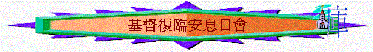

[ 認識道教ppt ] [認識佛教ppt ] [ 認識回教ppt ]
１.基本信仰
|
基督復臨安息日會基本信仰 |
||
|
一、 |
上帝的聖言 |
聖經，新約聖經及舊約聖經，乃是寫下的上帝的聖言。由上帝所默示，藉著聖潔的神人被聖靈感動說出及寫成。在這項聖言中，上帝將得救所需的知識賜給人。聖經是上帝旨意之無誤的啟示。是品格的標準，經驗的試金石，是各項教訓之權威性的顯示，並是上帝在歷史中的作為之忠實的記錄。 |
|
二、 |
上帝 |
聖經告訴我們，有一上帝：父、子、聖靈，為一同時永恆存在之三位的結合。上帝是不死的，全能，全知，超乎一切，並無時無處不在。祂是無窮的，超乎人的理解，但是藉著祂的自我啟示仍能為人所知。祂永遠配得全體受造之物的崇拜，敬仰，及服事。 |
|
三、 |
父上帝 |
永在的父上帝是創造主，萬物的根源，維持者，及一切受造之物的統治者。祂公義，聖潔，恩慈，充滿僯憫，不輕易發怒，滿有信實與堅定的愛。聖子，聖靈所顯示的品德與權能，也顯明了聖父。 |
|
四、 |
子上帝 |
永在的子上帝已在耶穌基督裡成為肉身。藉著祂，萬物得以造成。上帝的品格得以彰顯，人類的救贖大工得以完成。這世界也受了審判。永遠是真實的神，也成了真實的人耶穌基督。祂是由聖靈成孕，為處女馬利亞所生。祂作為人，度過人的生活並遭受試探，完美的表現了上帝的愛與公義。祂所行的神蹟彰顯了上帝的大能。證明祂是所應許的彌賽亞。祂在十字架上自願為我們的罪，代我們受苦受死。祂已從死裡復活，升天，在天上聖所裡為我們服務。祂將在榮耀中復臨，最後一次拯救祂的百姓，並使萬物復興。 |
|
五、 |
聖靈上帝 |
永在的聖靈上帝，在創造，在上帝成為肉身及救贖上，都曾積極參與。祂曾感動聖經的作者們。祂曾以能力充滿基督的生命。祂吸引人、感動人，那回應祂感動的人，祂就更新，變化為上帝的形像。祂為父及子差遣，常與上帝的兒女同在。祂賜下屬靈的恩賜給教會，使其有能力為基督作見證，並與聖經相和地，引領教會進入一切真理。 |
|
六、 |
創造 |
上帝是萬物的創造主。並且祂創造過程的真實記錄，已在聖經中啟示出來。六日之內耶和華造了「天地」及地上一切的活物，並在那第一週的第七日安息。這樣，祂設立了安息日作為祂完成創造大功的永久記念。那作為上帝創造的頂尖傑作的第一個男人和第一個女人，蒙賜予這世界的管理權，並負責照顧這個世界。這世界創造完成時，乃是「甚好」，來稱頌上帝的榮耀。 |
|
七、 |
人的性質 |
男女受造都是依上帝的形像並具有個性，有思想行為的能力與自由。雖然都受造是自由的生靈，但各人都是一個身、心、靈之不可分的整體。生命、氣息、及一切都需依靠上帝。當我們的始祖違背上帝時，他們拒絕了依靠祂，就從上帝之下崇高的地位墮落了。他們身上上帝的形像被破壞，而且必須死亡。他們的後裔承受了這種墮落的性情與後果。他們生時就有軟弱，並傾向罪惡。但是上帝在基督裡叫世人與祂和好。並藉著聖靈在悔改的人身上恢復創造主的形像。他們受造為了榮耀上帝，蒙召愛祂和彼此相愛，並要看顧他們的環境。 |
|
八、 |
善惡之爭 |
為了上帝的品格，祂的律法，以及祂對宇宙的統治，整個人類都參與了基督與撒但之間的善惡大鬥爭。這項爭戰起始於天庭。那時，一個受造能作自由選擇的生靈，因高抬自我，變成了撒但，成了上帝的仇敵。他領導部分天使參與反叛，又領亞當夏娃犯罪，使背叛的靈進入了這個世界。人類的罪，導致上帝在人身上的形像遭到扭曲，受造世界的秩序被破壞，終於導致洪水滅世。受造的全宇宙都正在觀看，這個世界已經成為宇宙爭戰的舞台。從這爭戰中，上帝的愛終會清楚地彰顯。為了在這戰爭中幫助祂的子民，基督差遣聖靈及忠誠的天使，在他們得救的路上一路引導、保護，及支持他們。 |
|
九、 |
基督的生，死與復活 |
人在基督完全順從上帝旨意的生活中，祂的受苦、受死、與復活中，是上帝準備了人唯一贖罪之方法。使凡藉著信接受這項贖罪的人能得永生，並使全體受造之物更明白創造主無窮聖潔的愛。這項完全的贖罪，闡明了上帝律法的公義，及祂品德的恩慈，因其一面定我們的罪，一面為我們準備了赦免。基督的死是替代，也是贖罪，使人改變，也使人與神和好。基督的復活宣告上帝勝過了罪惡的勢力，並保證那些接受救贖的人最後會戰勝罪惡與死亡。它宣告耶穌基督是主。一切在天上的，地上的，在祂面前，無不屈膝。 |
|
十、 |
得救的經驗 |
上帝因祂無限的慈愛與憐憫，使那無罪的基督為我們成為罪，為要使我們在祂裡面成為上帝的義。我們在聖靈領導下，感覺自己的需要，承認自己的罪孽深重，悔改我們的罪愆，並相信耶穌為主、為基督、為代罪者、為我們的榜樣。這項領受救恩的信心，乃得自上帝聖言的大能。為上帝恩典所賜。藉著基督我們被稱為義，被收納為上帝的兒女，從罪的轄制中得釋放。藉聖靈我們重生，並成為聖潔。聖靈更新我們的心意，將上帝愛的律法寫在我們心上。我們蒙賜能力度聖潔的生活，我們常在祂裡面，就與祂神聖的性情有分。並如今在審判中，在得救上，都有了保證。 |
|
十一、 |
教會 |
教會是認耶穌基督為主、為救主的信徒的社團。繼舊約時代上帝的子民之後，我們蒙召從世界出來，一同聚集，為要崇拜、交通、學習上帝的聖言，舉行聖餐，服務人群、及向普世宣講福音，教會從成為肉身的道基督，與從寫下的道聖經獲得權柄。教會是上帝的家庭，祂所收納的兒女，其中的分子活在新約的基礎上。教會是基督的身體。是以基督為首的信仰的團體。教會是基督為了捨命使其潔淨與成聖的新婦，在祂凱旋時，祂會獻給自己一個榮耀的教會，就是自己寶血所買來的歷代以來忠心的信徒，沒有玷污，皺紋等類的病，是聖潔沒有瑕疵的。 |
|
十二、 |
餘民及其使命 |
普世的教會是由所有真正相信基督的人所組成。但在末日，背道廣為蔓延之時，有一批餘民蒙召出來遵守上帝的誡命及耶穌的真道。這批餘民宣告審判的時候已經到了。宣講靠基督得救，並宣告祂復臨的日子已經臨近。這項宣告由啟示錄十四章中的三位天使所預表。它與天上的審判工作同時進行，造成了地上的悔改與改革的工作。每一信徒都已蒙召親自參與此項普世的見證。 |
|
十三、 |
基督身體的合一 |
教會是由許多肢體合成的一個身體。這些肢體是從各國各族各方各民選召出來的。在基督裡我們是新造的人。種族、文化、學識、國籍的不同，以及地位、貧富、性別的差異，都不可在我們中間造成分裂。我們在基督裡都是平等的。藉著一位聖靈，基督使我們與祂並我們彼此之間都合而為一。我們要毫無保留地服事人與接受人的服事。藉著耶穌基督在聖經中的啟示，我們共有同一的信仰與指望，並向所有的人作出同一的見證。這種合一源自三一真神的合一，祂已收納我們為祂的兒女。 |
|
十四、 |
洗禮 |
藉著洗禮，我們公開承認對耶穌基督的死與復活的信心，並見證我們對罪已經死了，及見證我們要以新生的樣式而活。這樣，我們承認基督是主，是救主，成為祂的子民，並蒙接受成為祂教會的教友。洗禮象徵我們與基督的聯合，罪的赦免，以及我們的領受聖靈。它是全身入水，並是基於對耶穌的肯定信心，及悔罪的憑據。此乃依照聖經的教導，並接受聖經教訓之後舉行。 |
|
十五、 |
聖餐禮 |
聖餐禮是領用耶穌的血與身體的象徵，表達我們對祂，我們的主與救主的信心。在這項聖餐禮的經驗中，基督臨格與祂的子民相會並加力量給他們。我們領用時，喜樂地宣講主的死，直到祂再來。領聖餐的準備包括自省、悔改與認罪。主設立了洗腳禮，代表重新潔淨，表示樂意帶著基督的謙卑彼此服事。並將我們的心在愛中聯合，聖餐禮是對所有相信的基督徒開放的。 |
|
十六、 |
屬靈的恩賜與職事 |
上帝在各世代都賜給祂教會每一教友屬靈的恩賜，讓每一教友用在愛的服務上，使教會及人類都共同獲益。這些恩賜是由聖靈按著祂自己的意思分賜給各教友，供給了教會為完成上帝指定任務所需的一切能力與職事。依據聖經，這些恩賜包括的職事有：信心、醫病、說預言、宣講福音、教導、治理、和好、同情、自我犧牲的服務，並幫助人鼓勵人的愛心。有些教友被上帝選召，聖靈賦予能力，從事教會所承認的職務，如牧師、傳福音的、使徒、教師，以滿足信徒服務時特別的需要，以建造教會至其靈性成熟之境，以培植教友對上帝的知識及信仰上的合一。當教友作上帝百般恩典的忠心管家，使用這些屬靈的恩賜時，教會就得到保護，免受假道破壞的影響，而獲致出於上帝的增長，並在信興愛中建立自己。 |
|
十七、 |
預言的恩賜 |
聖靈的恩賜之一是先知。這項恩賜乃是餘民教會的一項特徵，它曾顯現在懷愛倫的工作中。她既是主的使女，她的著作乃是真理的延續，可信的原始資料，供給教會安慰、引導、教訓、及督責。這些著作也清楚說到，聖經是一切經驗與教訓必須接受試驗的標準。 |
|
十八、 |
上帝的律法 |
上帝律法的諸般偉大原則表達在十誡中，也表現在基督的生活裡。它們表達上帝的愛，上帝的旨意，以及上帝對人的品行及各種關係上的要求，各世代的人都要遵行。這些命令乃是上帝與祂子民立約的基礎，也是上帝審判的標準。藉著聖靈的工作，它們指出罪惡，喚起人對救主的需要感。得救全是出於恩典，不是出於行為；但是其果子是遵行誡命。這項順從發展基督徒的品格，並帶給基督徒康寧感。它是我們對主的愛及對同胞關心的憑據。出於信心的順從顯明了基督改變人生的大能，因此，基督徒的見證便得以加強。 |
|
十九、 |
安息日 |
那賜福的創造主，在六日創造大功之後，第七日便安息了，並為所有的人設立了安息日，作為創造的記念。上帝那永不改變的律法的第四條誡命，要求人依從安息日的主耶穌的教訓與作法，遵守這第七日的安息日，作為休息、崇拜、與服務的日子。安息日是一個與上帝及彼此交通的喜樂的日子。它是我們在基督裡蒙救贖的表徵，是我們成聖的記號，是我們忠誠的標記，並是在上帝之國中永恆之未來的預嘗。安息日是上帝與祂子民之間所立永約之永恆的標記。喜樂地從晚上至晚上，從日落至日落，遵守這神聖的時刻，就是對上帝創造與救贖的慶賀。 |
|
二十、 |
管家 |
我們是上帝的管家。祂託付我們時間與機會，能力與錢財，地上的福分與資源。我們要負責適當的去使用它們。我們由於忠心地服事祂及服事我們的同胞，藉著將什一歸還祂，藉著為了福音的宣講，支持教會及教會增長所作的奉獻而承認上帝的主權。管家的身分是上帝為了培育愛，及勝過自私與貪心所賜給我們的一項特權。管家因他忠心而使他人得福時就歡喜快樂。 |
|
二十一、 |
基督徒的品行 |
我們蒙召要成為一批敬虔的百姓，思想、感情、行動，都與天國的原則相和諧。為了讓聖靈在我們裡面重造我們有主的品格，就讓我們自己只參與那些能在我們生命中產生像基督的純潔、健康、喜樂的事。也就是說，我們的娛樂，應該合乎基督徒的喜好與美的崇高標準。我們的衣著，雖因文化上的差異有所不同，卻當以樸素、保守、整潔為原則。適合於他的美不在於外在的妝飾，但在於那以溫柔安靜的心為永不磨滅之妝飾的人。它也表示，因為我們的身體是上帝的殿，我們就要聰明的照顧。除了適當的運動與休息之外，我們要盡可能採用最健康的飲食，並禁止食用聖經所指明的不潔淨的食物。因為含酒精的飲料、煙草、以及毒品，有害我們的身體，我們也禁戒使用。要參與那能將我們的思想身體都能帶入在基督教導下的一切活動，祂熱望我們健康、喜樂與良善。 |
|
二十二、 |
婚姻與家庭 |
婚姻是上帝在伊甸園所設立，並由耶穌所確認，為一男一女在相愛中廝守終身的結合。對基督徒而言，婚約的應許不僅是對配偶立的，也是對上帝立的，並且這種婚姻關係應該只由雙方信仰相同的人建立。彼此相愛、尊重、及責任感，乃是構成這項關係的因素。這項關係，乃是要反映基督與祂的教會之間的愛，聖潔、親密、與關係的永恆性。至於離婚，耶穌教導說，除了因為姦淫之外，人若離棄配偶與另一個人結婚，就是犯了淫亂罪。雖然有些人的家庭關係不如理想，但那在基督理充分將自己許配予對方的婚姻夥伴，仍能藉著聖靈的帶領及教會的牧養而達成愛的結合。上帝賜福家庭，要家庭的成員彼此幫助達到完全成熟之境。作父母的人，要教養兒女愛主並順從主。藉著他們的言行，他們要教導兒女，基督是一個慈愛的管教者。永遠溫柔、體貼，要他們成為祂的身體，上帝家庭中的成員。家庭親密的增長，乃是末世福音信息的標誌之一。 |
|
二十三、 |
基督在天上聖所的服務 |
天上有一個聖所，是主所支的，不是人手所支的真帳幕。基督在其中為我們服務，為了使信徒能獲得祂在十字架上只一次獻上的贖罪祭的好處。祂升天時，即就任我們的大祭司，並開始祂代求的工作。在主後1844年，在二千三百日預言時期結束之時，祂進入了祂贖罪工作的第二階段，也是最後的階段。是查案審判的工作，是對一切罪惡最終處置工作的一部分，是由贖罪日潔淨古時希伯來聖所的儀式所預表。在那預表性的崇祀中，聖所是由所獻祭牲的血所潔淨，但是天上的物件卻是用那完全的祭，耶穌的血所潔淨。查案審判向天上的生靈顯明，死去的人中，那些在基督裡睡了的，因此是在祂裡面的人，是配在第一次復活中有分的。也顯明在活人中，那些住在基督裡的，遵守上帝誡命和耶穌真道，並在祂裡面，因此，已預備好可以變化升天，進入祂永恆的國。這項審判顯明了上帝拯救那相信耶穌的人，乃是公義的。並宣稱，那保持忠於上帝的人，應承受國度。基督這項工作的完成就是標明基督復臨前，人類恩典時期的結束。 |
|
二十四、 |
基督復臨 |
基督復臨是教會有福的指望，是福音最高的境界。救主的降臨是真實的，救主要親自降臨，是肉眼能見，是普世性的。祂復臨時，死去的義人將要復活，並與活著的義人一同得榮耀，被接到天上。但那不義的人則要死亡。大多數的預言幾乎都完全應驗，目前的世界情況顯明，基督復臨已經迫近。但那時辰未啟示我們，因此我們受教要隨時都準備好。 |
|
二十五、 |
死亡與復活 |
罪的工價乃是死。但是上帝，那唯一不死的，卻要賜永生給祂的贖民。在那日以前，死對所有的人，乃是一種無知覺的狀態。當基督，我們的生命，顯現之時，復活的義人與活著的義人，要得榮耀，被提到天上，與他們的主相遇。那第二次的復活，就是不義之人的復活，則要等到一千年之後。 |
|
二十六、 |
千禧年與罪的結束 |
千禧年乃是第一次復活與第二次復活之間基督與聖徒在天上施行統治的時期。在此時期中，已死的惡人會受審判。地會完全荒涼。沒有活人居住，但為撒但與他的使者所佔據。一千禧年結束時，基督與祂的聖徒，並聖城，一同從天降至地上。那時死去的惡人要復活。他們同撒但與他的使者一起圍攻聖城。但是從上帝那裡來的烈火會燒滅他們並潔淨地球。這樣，宇宙就會永遠不再有罪及罪人。 |
|
二十七、 |
新地 |
在義人所居住的新地之中，上帝會為蒙贖之人預備永遠的家鄉。並一個享受永生、愛、喜樂，及在祂面前學習的完美的環境。因為在這裡，上帝會親自與祂的子民同住。痛苦與死亡將成為過去。善惡之間的大鬥爭要結束，不再有罪惡。宇宙萬物，有生命之物與無生命之物，都會宣揚上帝就是愛。祂將施行統治，直到永遠。阿們。 |
2.爭議事情
∼安息日會近幾十年內部有改革，但仍有分為傳統、分裂、福音派和自由派的安息日會
∼而安息日會令人有以下爭議事情：
a.
主再來的日子上
∼他們對「基督的再來」有這樣的觀念，是可以計算日子。而當那日沒有到來時，又會砌出理由，耶穌基督已復臨在天上至聖所。
b.另立權威上
∼雖然他們宣稱聖經是神的默示，是唯一無誤的規範，也辯稱沒把愛蓮：懷特的著作看如聖經一樣
∼但基督復臨安息日會人士給懷特夫人的評價卻是：
「懷特夫人的著作．．．．．．．不是我們解釋的泉源．．．．然而．．．．我們也相信，聖靈卻把重要的事件啟示給她，呼召她．．．．這些教導看似是從主而來賦有默示性的導言」
c.在因信稱義上
∼他們雖宣稱行為絲毫不是獲得救恩的方法，但在懷特夫人的著作中曾表示：「．．．．在最後的日子，守安息日的考驗要顯的清楚，當這個時候來臨，任何不守安息日的人要受獸的印記，且要避進天堂」
∼另外他們是接受調查審判
[ 認識道教ppt ] [認識佛教ppt ] [ 認識回教ppt ]